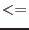

Return a Logical 2-dimensional mask array for a given size,
where the area of the pixels at (rInner  radius  rOuter) are True.
rOuter) are True.
Note: Make sure to deallocate the returned array after use.
interface getAnnularMaskAry
function getAnnularMaskAry(sizeX, sizeY, centX, centY &
, rOuter, rInner) result(arMask)
logical, allocatable :: arMask(:,:)
integer(int32), intent(in) :: sizeX, sizeY
real(double), intent(in) :: centX, centY, rOuter
real(double), intent(in), optional :: rInner ! 0 in default.
end function getAnnularMaskAry
end interface